国科大《高级人工智能》复习
大哲学家沈老师上的部分很值得一听，时不时会引起一些思考。
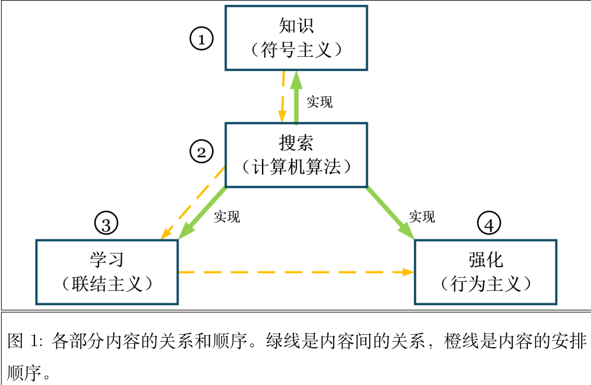
三大学派
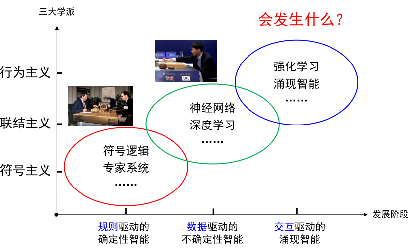
符号主义
逻辑的基本概念
设计通用问题求解器是一个伟大的算法问题
知识表示：把用自然语言表达的基本的数学公理表达为形式化的符号语言
知识推理：以形式化语言表述的知识库和查询为输入，需要一个自动化的算法，自动运行以得到最终的答案
什么是所谓“正确的推理”：逻辑蕴含
模型是可以评估的结构化世界
逻辑体系是用于判断结论是否在某一个模型中成立的语言体系
句子 (Sentence) 是由符号按照特定规则构成的表达式，表达的内容为需要被判定真假的信息；语法 (Syntax) 定义了句子的表达结构和规则；
如果有一个句子 α 在模型 m 中为真，则称 m 满足 α，或 m 是 α 的一个模型，并用符号 M(α) 表示所有满足 α 的模型的集合。
逻辑的语义蕴含实质是定义了一组逻辑句子与一个新句子之间的所谓的“正确推理”的关系。此时，这组逻辑句子，我们称为知识库 (Knowledge Base)，记作 KB，它是一个包含了多个逻辑句子的集合；这个新的句子，记作 α。那么，KB 与 α 之间的语义蕴含关系定义为：
KB 蕴含句子 α，记为 KB |= α，当且仅当，在所有 KB 为真的世界中，α 也为真。或者说，对于任意的模型，如果它使 KB 为真的同时使 α 也为真，则此时 KB 蕴含 α。
KB |= α 当且仅当M(KB) ⊆ M(α).
先证 ⇒：
∀m ∈ M(KB), 因为 KB |= α, 可推出 m 也使 α 为真, 所以 m ∈ M(α),所以 M(KB) ⊆ M(α).
再证 ⇐：
∀m ∈ M(KB), m ∈ M(α), 对于所有 m 来说, 使得 KB 为真, α 也为真, 根据定义即 KB |= α.
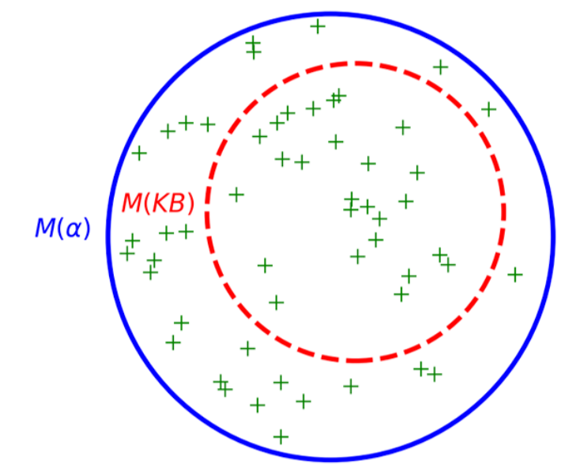
KB |= α 直观理解就是：在使 KB 为真的世界 (worlds) 里面 α 也全都要为真。
命题逻辑
BNF范式：
命题句子 → 原子命题句子 | 复合命题句子
原子命题句子 → True | False | P | Q | R . . .
复合命题句子 → (命题句子) | [命题句子]
| ¬命题句子
| 命题句子 ∧ 命题句子
| 命题句子 ∨ 命题句子
| 命题句子 ⇒ 命题句子
| 命题句子 ⇔ 命题句子
命题 (Proposition)，是一个要么为真，要么为假的陈述句，不考虑模棱两可的表述。
原子命题 (Atomic Propositions) 是最小命题，指无法被进一步分解的简单陈述句，其真值为“真”(True) 或“假”(False)，且不随时间或语境变化。真值会随日期改变这类命题被称为流命题 (Fluent)）。
原子命题通常用大写字母（如 P,Q,R）表示，以便在形式化系统中处理。
连接词的作用是将命题与命题连接起来，形成一个复合命题 (Complex Propositions)，被连接词连接的命题可以是一个简单的原子命题，也可以是一个复合命题。
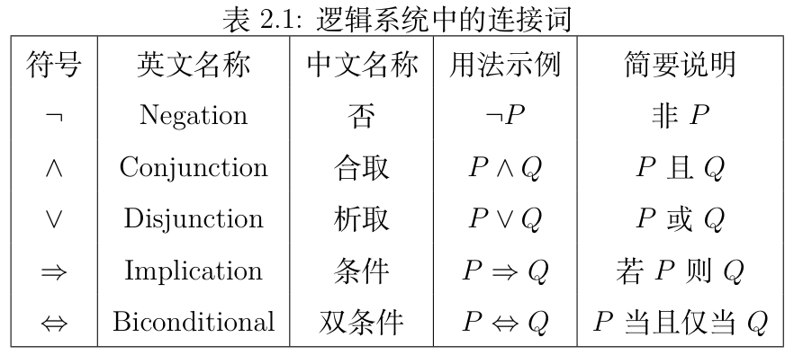
连接词的运算顺序为：¬, ∧, ∨, ⇒, ⇔。
⇒ 表示“条件”，只有当命题 P 为真而命题 Q 为假时，复合命题P ⇒ Q 才为假，否则为真；
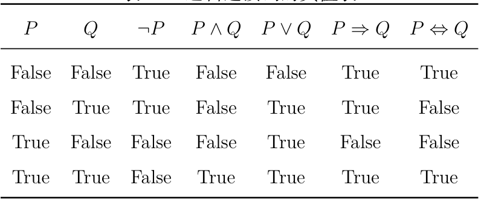
逻辑中的连接词 ∧, ∨ 和集合运算中的 ∩, ∪ 的含义是完全不同的。不过，它们也有如下的联系：
M(P ∧ Q) = M(P) ∩ M(Q)
M(P ∨ Q) = M(P) ∪ M(Q)
从上式中可以看出，所有能同时使 P 和 Q 成立的模型的集合，是 P所有模型的集合与 Q 所有模型的集合的交集。同样，所有能至少使 P 或 Q其中一个命题成立的模型的集合，是 P 所有模型的集合与 Q 所有模型的
集合的并集。
蕴含符号 |= 和形式逻辑连接词 ⇒ 的区别也值得注意。KB |= α 并不是一个合法的复杂句子，因为 |= 不是合法的连接词（连接词只有五个）。|= 表达了两个句子之间的一种关系，而 ⇒ 是用于知识表示的连接词。
句子的真值指派 (Truth Assignment)：给定一个命题逻辑的句子 α，给 α 中的每个原子命题指定一个确定的真值，被指定的这个真值的组合称为一次真值指派。如果在某个真值指派下，句子为真，则这个真值指派就是该句子的一个模型。
两个句子 α, β 逻辑等价（记作 α ≡ β），当且仅当 α |= β且β |= α
α ≡ β 当且仅当 M(α) = M(β)。如果两个句子逻辑等价，那么在任意的真值指派下，此两个句子的真假始终保持一致。
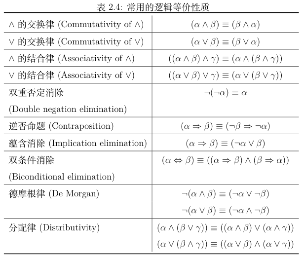
∧ 的交换律 (Commutativity of ∧)
(α ∧ β) ≡ (β ∧ α)
∨ 的交换律 (Commutativity of ∨)
(α ∨ β) ≡ (β ∨ α)
∧ 的结合律 (Associativity of ∧)
((α ∧ β) ∧ γ) ≡ (α ∧ (β ∧ γ))
∨ 的结合律 (Associativity of ∨)
((α ∨ β) ∨ γ) ≡ (α ∨ (β ∨ γ))
双重否定消除(Double negation elimination)
¬(¬α) ≡ α
逆否命题 (Contraposition)
(α ⇒ β) ≡ (¬β ⇒ ¬α)
蕴含消除 (Implication elimination)
(α ⇒ β) ≡ (¬α ∨ β)
双条件消除(Biconditional elimination)
(α ⇔ β) ≡ ((α ⇒ β) ∧ (β ⇒ α))
德摩根律 (De Morgan)
¬(α ∧ β) ≡ (¬α ∨ ¬β)
¬(α ∨ β) ≡ (¬α ∧ ¬β)
分配律 (Distributivity)
(α ∧ (β ∨ γ)) ≡ ((α ∧ β) ∨ (α ∧ γ))
(α ∨ (β ∧ γ)) ≡ ((α ∨ β) ∧ (α ∨ γ))
句子在所有真值指派下都为真时，被称为该句子是永真的。
若存在一个真值指派，句子在这个指派中为真，那么它是可满足的 (Satisfiable)。
任何原子命题一定是可满足的。
如果一个句子在任何真值指派中都不为真，那么它是不可满足的 (Unsatisfiable)。
KB |= α 当且仅当(KB ⇒ α)是永真的
其中，(KB ⇒ α) 表示的句子是 (α1 ∧· · ·∧αk ⇒ α)，这里 α1 · · · αk是 KB 中的所有句子。
先证 ⇒:
因为 KB |= α 所以 M(KB) ⊆ M(α), ∀m ∈ M(KB), m ∈ M(α), 即KB 为真, α 为真。
KB ⇒ α 永真。
再证 ⇐:
1) 若 M(KB) ̸= ∅ 则 ∀m ∈ M(KB), 因为 KB ⇒ α 永真, 所以m ∈ M(α), 可推出 M(KB) ⊆ M(α), 即 KB |= α.
2) 若 M(KB) = ∅ 则不存在 m 能使 KB 为真, 又因为 ∅ ⊆ M(α) 所以 M(KB) ⊆ M(α), 即 KB |= α。
证毕.
KB |= α 当且仅当(KB ∧ ¬α)是不可满足的
先证 ⇒:
假设 KB |= α，这意味着 M(KB) ⊆ M(α)。换句话说，任何使 KB 为真的模型也会使 α 为真。
如果 KB ∧ ¬α 是可满足的，那么存在一个模型 m 使得 KB 和 ¬α 同时为真。这意味着 m /∈ M(α) 且 m ∈ M(KB)，与 M(KB) ⊆ M(α) 矛盾。
因此，KB ∧ ¬α 一定是不可满足的。
再证 ⇐:
假设 (KB ∧¬α) 是不可满足的。这意味着不存在任何模型 m 使得 KB和 ¬α 同时为真。
因此，任何使 KB 为真的模型 m 必须使 α 也为真，即 M(KB) ⊆M(α)。
因此，KB |= α。
综上所述，KB |= α 当且仅当 (KB ∧ ¬α) 是不可满足的。
证毕。
形式推演
形式可推演性：A 是在命题逻辑中由 Σ 形式可推演（或形式可证明）的，记作Σ ⊢ A,当且仅当 Σ ⊢ A 能由（有限次使用）命题逻辑的形式推演规则生成。
对于一个形式推演系统，如果它从知识库中推导出的所有结论都能被知识库蕴含，就称这个推演体系具有可靠性，即：若 KB ⊢ α，则 KB |= α。它代表了通过这个推演体系推理出来的结论一定是正确的。
对于一个形式推演体系，如果它能推导出所有被知识库蕴含的结论，就称这个推演体系具有完备性，即：若 KB |= α，则 KB ⊢ α。代表了这个推演体系可以推出所有正确的结论。
文字 (Literals)是一个原子命题或是一个原子命题的否定。
在归结原理推演系统中，文字是最基本的构成元素。文字包括正文字和负文字。原子命题是正文字，而原子命题的否定是负文字。
互补文字 (Complementary Literals)是两个互为否定的文字，即同一个原子命题的正文字和负文字共同构成一组互补文字。
子句 (Clauses)是用析取连接的文字，一般形式为：ℓ1 ∨ ℓ2 ∨ · · · ∨ ℓk，其中，ℓi 为文字 (i = 1, 2, · · · , k)。
合取范式 (Conjunctive Normal Form, CNF)是用合取连接的子句，一般形式为：C1 ∧ C2 ∧ · · · ∧ Cm其中，Ci 为子句 (i = 1, 2, · · · , m)。
归结原理的推演过程概括为两步：
• 首先，将知识库 KB 和待判断的句子 α 都转换为合取范式；
• 然后，不断使用归结规则来判断 α 是否能够通过 KB 推出。
将句子 ¬C ⇔ (A ∨ B) 转换成合取范式。
1) 使用双条件消除规律消除 ⇔：
(¬C ⇒ (A ∨ B)) ∧ ((A ∨ B) ⇒ ¬C)
2) 使用蕴含消除规律消除 ⇒：
(¬¬C ∨ A ∨ B) ∧ (¬(A ∨ B) ∨ ¬C)
3) 使用德摩根律和双重否定消除规律，消除多余的 ¬ 并把 ¬ 挪到子句
里面的文字上：
(C ∨ A ∨ B) ∧ ((¬A ∧ ¬B) ∨ ¬C)
4) 使用分配律，用 ∨ 把括号内为 ∧ 的命题拆分：
(C ∨ A ∨ B) ∧ (¬A ∨ ¬C) ∧ (¬B ∨ ¬C)
两个子句的归结规则 :
$\frac{\ell1 \vee \cdots \vee \ell_k, \quad m_1 \vee \cdots \vee m_n}{\ell_1 \vee \cdots \vee \ell{i-1} \vee \ell{i+1} \vee \cdots \vee \ell_k \vee m_1 \vee \cdots \vee m{j-1} \vee m_{j+1} \vee \cdots \vee m_n}$
其中 ℓi 和 mj 是互补文字。横线上的是已知条件，横线下的是能推演出的结论（推演出来的没有 ℓi 和 mj了）。
上面的式子中，已知条件里的第一个子句中的 ℓi 和第二个子句中的 mj互为互补文字，在归结规则中能够被抵消掉，因此能让两个子句推演出一个新的子句。这个过程被称为归结。例如：
$\frac{A \lor B, \quad \neg B}{A}$
若 KB ⊬ ∅，KB ⊢ α当且仅当{KB, ¬α} ⊢ ∅。其中 ⊢ 仅使用归结法则获得新子句。
证明思路：{¬α, α} ⊢ ∅
当 KB 无法使用归结原理推演得到空子句，即这个知识库是一致的，不会包含矛盾（例如同时包含 A和¬A）时，那么 KB ⊢ α 的充要条件就是 {KB, ¬α} 的合取范式能够在有限次使用归结规则后得到空子句（其实就是推出矛盾）。
一个验证句子 α 是否能够被知识库 KB 推理出来的算法：
1) 构建合取范式：
将 KB 的所有子句与 ¬α 合取，构建一个大的初始合取范式。
2) 反复迭代归结：
对合取范式中的子句使用归结规则，生成新子句，然后将原子句和新子句合并称新的子句集合。
3) 判断终止条件：
如果在某次归结中生成空子句 ∅，则 KB ⊢ α 成立；如果无法进一步归结出新的子句且所有迭代过程中都未出现空子句，则 KB ⊢ α 不成立。
必考：归结原理的可靠性、完备性证明
证明归结原理是可靠的，只需证明每一次单独的归结步骤是可靠的
证明.
不失一般性，记 A 为 l1 ∨ · · · ∨ li−1 ∨ li+1 ∨ · · · ∨ lk，B 为 m1 ∨ · · · ∨mj−1 ∨ mj+1 ∨ · · · ∨ mn，C 为 li。那么也就是证明：(A ∨ C) ∧ (B ∨ ¬C) |= A ∨ B.
从真值表中可以看出，当 (A ∨ C) ∧ (B ∨ ¬C) 为真时，A ∨ B 也为真。因此，我们证明了 (A ∨ C) ∧ (B ∨ ¬C) |= A ∨ B。也就是说，我们证明了归结原理的可靠性。
要证明归结原理的完备性，也就是证明若 KB |= α，则 KB ⊢ α。
设 S = {KB, ¬α}，RC(S) 是 S 经过所有可能的归结操作后，得到的所有子句集合（包含 S 中原有的所有子句）。那么 KB ⊢ α 当且仅当∅ ∈RC(S)。此外，根据蕴含的性质，KB |= α 当且仅当(KB∧¬α)是不可满足的。因此，我们只需证明：若(KB ∧ ¬α)是不可满足的，则∅ ∈ RC(S)
中译中：只需证明若KB |= α，则{KB, ¬α}推演出矛盾
逆否命题：若∅ /∈ RC(S)，则(KB ∧ ¬α)是可满足的
证明.
针对 S 中的原子命题 R1, R2, · · · , Rl，我们构造如下的真值指派：
• 首先，因为 RC(S) 中不包含空集，因此 RC(S) 中不包含永假的子句。
• 从 i = 1 到 l，顺序的指派 R1, R2, · · · , Rl 的真值：
– 如果 RC(S) 中包含一个子句，此子句包含 ¬Ri，且此子句的其它文字都已经被指派为 False（在之前的步骤中进行的）或不包含其它文字，则把 Ri 指派为 False；
– 否则，把 Ri 指派为 True。
• 我们用反证法证明：这个真值指派使得 RC(S) 中的子句都为真。假设，在此过程的第 i 步，我们这样来指派 Ri 使得某个子句 C 为 False，且假设这是首次出现 False 的子句；此时，子句 C 只能是如下两种形式之一：
False ∨ False ∨ · · · ∨ False ∨ Ri或者False ∨ False ∨ · · · ∨ False ∨ ¬Ri
显然，如果 RC(S) 中只包含以上两个子句之一，子句 C 是不可能在此真值指派中为 False 的。只有在此两个子句同时存在时，它们其中的一个才为 False。因此，RC(S) 此时应同时包含了以上两个子句。
• 以上两个子句显然是满足归结条件的，也就是说，它们归结后的子句也应该在 RC(S) 中；同时，该归结得到的新子句已经被指派为 False了，这与我们之前的假设矛盾。
证毕。
通过以上步骤，我们成功给出了一个使 RC(S) 为真的真值指派，这说明它是可满足的。也因此，我们证明了最初想要证明的结论，也就是归结原理是完备的。
归结完备性极简版：
反设：推不出空子句。
构造：按变量顺序赋值——能赋假就赋假，除非赋假会让某子句”死透”（只剩一个正文字且其他字都假了）。
矛盾：若所有子句都真，则原式可满足（与”有矛盾”冲突）；若某子句假，则它必含可归结的一对，消去后得到更短的假子句，无限归结必得∅，与反设矛盾。
结论：真矛盾必能归结出空子句。
Modus Ponens 规则
确定子句只有如下两种形式：
- 一个正文字，比如 A。
- (多个正文字的合取) ⇒ 正文字，比如 C ∧D ⇒ B（等价于 ¬C∨¬D ∨B）。
Modus Ponens 规则：
$\frac{a_1, \dots, a_n, \quad a_1 \land \dots \land a_n \Rightarrow \beta}{\beta}$
这里，a1, · · · , an 都是正文字。
前向推理是从文字和子句开始，逐步推出结论，被称为数据驱动型推演；后向推理则是从结论逆推，搜寻是否有能满足结论的子句，称为目标驱动型推演。
既可靠又完备
可靠性的证明：真值表
完备性的证明：
RC(KB) 是 KB 里面的子句以及所有可以根据 Modus Ponens 规则从KB 推演出来的子句的集合。
1) 构造如下的真值指派 m：对于任意的正文字 a，a 指派为 True 当且仅当 a ∈ RC(KB)。
2) 接下来，证明：在 m 下，KB 为真，也就是反证：若此时 KB 为False，那么必存在一个确定子句，在 m 下为 False。
i) 若该子句为 a1 ∧ · · · ∧ ak ⇒ b, 也就是说，在 m 中，a1, · · · , ak 均为True，且 b 为 False。根据 1) 中的定义，ai ∈ RC(KB) (i = 1, · · · , k)。又根据 Modus Ponens 规则，b ∈ RC(KB)。根据 1) 中的定义，在 m 中，b 为 True。推出矛盾。
ii) 若该子句为 b，在 m 下为 False，则 b /∈ RC(KB)，矛盾。
3) 若 KB |= α，根据蕴含的定义，在 m 中，α 为真；则根据 1) 中的
定义，α ∈ RC(KB)。
也就是说：KB ⊢ α。
证毕。
限制：知识库的每个句子都有且只有一个正文字
一阶谓词逻辑
BNF 范式：
句子 → 原子句子 | 复杂句子
原子句子 → 谓词(项1, . . . , 项n) | 项1 = 项2
复杂句子 → (句子) | [句子]
| ¬句子
| 句子 ∧ 句子
| 句子 ∨ 句子
| 句子 ⇒ 句子
| 句子 ⇔ 句子
| 量词
变量, · · · , 变量
句子
项 → 函数(项1, . . . , 项n)
| 常量 | 变量
量词 → ∀ | ∃
常量 → A | Z | LZ | · · ·
变量 → a | c | z | · · ·
谓词 → True | False | Parent | After | · · ·
函数 → Fatherof | Motherof | · · ·
常量 (Constants)是用来指称特定对象的符号，一般用大写字母来表示。
变量 (Variables)是用来表示任意对象的符号，一般用小写字母来表示。
函数 (Functions)是指称对象与对象之间的映射关系的符号。一般使用首字母大写的一个单词或一串字符来表示。
谓词 (Predicates)是一种特殊的函数，输出只可能为 True 或者False，和命题逻辑中的原子命题相对应。
连接词 (Connectives)用于连接不同句子，与命题逻辑中的连接词相同。
量词 (Quantifiers)包括全称量词 ∀ 和存在量词 ∃，对变量起修饰作用。
等号 (Equality)代表了两件事物是完全相同的。
原子句子是由一个谓词，或者一个等号连接两个项组成的句子。复杂句子是使用连接词连接的原子句子。
一阶谓词逻辑的归结原理有可能不停机
与命题逻辑的区别
命题逻辑中，我们在讨论一个句子的模型的时候，我们只需要对句子中的每个原子命题都做真值指派。一阶谓词逻辑中，我们并不能直接指派原子句子的真假，我们只能对原子句子涉及的常量、函数、谓词做一次解释。
对于一个原子句子，在对其中的常量、函数、谓词做完一次解释之后，所指派的对象在该论域中确实符合所指派的关系，那么这个解释就是该原子句子的一个模型；否则，此解释不是该原子句子的模型。这就是一阶谓词逻辑中原子句子的模型的定义。
一阶谓词逻辑的合取范式
将句子转换为合取范式形式；去掉存在量词，只保留全称量词
1.用双条件(α ⇔ β) ≡ ((α ⇒ β) ∧ (β ⇒ α))和蕴含消除(α ⇒ β) ≡ (¬α ∨ β)消除 ⇒ 和 ⇔
2.内化 ¬：运用 ¬∀x p ≡ ∃x ¬p，¬∃x p ≡ ∀x ¬p，双重否定消除规律，德摩根律等规律
3.改变变量符号，让每一个存在量词都修饰一个不同的变量
4.用包含全称量词变量的函数来替代所有存在量词变量
5.消去全称量词符号
6.使用分配律，用 ∨ 把括号内为 ∧ 的句子拆分
一个替换是指，将一阶谓词逻辑句子中的某些变量替换为常量、函数或者其他变量的过程，事实上该过程也可以视作一次赋值。替换通常被记作：θ = {x1/t1, x2/t2, · · · , xn/tn}，xi 是一阶谓词逻辑句子中的变量；ti 是任意项，可以是常量、函数或者变量，要求 xi ̸= ti，即不能将变量替换为自己
对于句子 α, β 和替换 θ，若 αθ 和 βθ 是两个相同的字符串，则 θ是 α, β 的合一算子，即 UNIFY(α, β) = θ。
一阶谓词逻辑中归结原理的规则是两个经过实例化的替换 θ 后为互补文字的句子可以消去。不过，消去的代价是，得到的结果也是需要经过 θ 的替换操作的
$\frac{l1 \lor \cdots \lor l_k, \quad m_1 \lor \cdots \lor m_n}{(l_1 \lor \cdots \lor l{i-1} \lor l{i+1} \lor \cdots \lor l_k \lor m_1 \lor \cdots \lor m{j-1} \lor m_{j+1} \lor \cdots \lor m_n)\theta}$
其中 UNIFY(li,¬mj)=θ 。
prolog编程
Head :- Body. 等价于逻辑公式 Body ⇒ Head，表示“如果 Body 成立，则 Head 成立”。
?- parent(tom, lily). 查询 Tom 是否是 Lily 的父母，系统输出 true。
以计算阶乘为例：
% 设置一个谓词 f(N,F)，表示 F 是 N 的阶乘
f(0, 1). % 0 的阶乘为 1
f(N, F) :- % 若以下条件成立，则 F 为 N 的阶乘
N > 0, % N 大于 0
N1 is N - 1, % N1 = N - 1
f(N1, F1), % F1 是 N1 的阶乘
F is F1 * N. % 递归计算
加载此知识库后，可有两种常见用法：
% 用法一：判断阶乘
?- f(5, 120). % 输入：让程序判断 5 的阶乘是不是 120
true. % 自动输出：判断成立
% 用法二：计算阶乘
?- f(5, W). % 输入：计算 5 的阶乘，W 为变量
W = 120. % 自动输出：W 的取值
不可靠：例如无限递归 A = f(A)
不完备：受“规则顺序”和“搜索策略”的影响，有时会导致推理卡死，无限循环
搜索
第一种搜索问题：给定一个初始状态和终止状态，我们希望找到从初始状态到终止状态的一条路径。这种搜索称为状态搜索。
第二种搜索问题：给出一个函数 f(x)，我们希望找到使目标函数最小的自变量 x。这种搜索称为最优化搜 索。
第三种搜索问题：针对双（多）方博弈问题的策略搜索，这种搜索称为对抗搜索。
状态搜索
初始状态、动作集合、转移模型、目标测试、路径成本五个要素
树搜索
将根节点视为初始状态，任意的树节点都代表一个状态，长出树枝的过程就是执行动作或扩展路径的过程。同时，我们将所有即将长出新树枝的节点称为前沿 (Fringe)，每次都前沿中选取出一个节点：首先检查它是否是目标状态，如是，则停止搜索；若不是，则扩展此节点的后续状态，将这些后续状态放入前沿。
1 | // 树搜索算法主函数 |
图搜索：新增了一个名为 closed的数据结构，用于储存已经被扩展过的状态；并且只对不在此集合中的状态进行扩展，这样就可以避免重复探索同一个状态。
1 | function Graph-Search(problem, fringe) returns a solution, or failure |
图搜索虽然避免重复探索同一个状态，但是这些相同状态的父节点可能不同，也就是说：这些状态相同的节点代表了不同的到达这个状态的路径。因此，图搜索并不能穷尽所有路径的可能，在某些情况下找不到到达终止状态的最优路径。也就是说，图搜索可能保证算法的完备性，但并不能保证算法的最优性。
图分离性，指的是：在图搜索过程中，前沿总是将已访问的节点和未访问的节点分离开。也就是说，在图搜索过程中，从任意一个的已访问的节点到任意一个未访问节点的任意一条路径上都必有一个节点在前沿中。
搜索策略
深度限制搜索 (Depth-limited Search)
设置了最大深度的深度优先搜索，可以提高深度优先搜索的速度，但如果设置的深度太浅，可能会找不到解。
迭代深度搜索 (Iterative Deepening Search)
解决了深度限制搜索不完备的问题。迭代增加深度，对不同的深度使
用深度限制搜索，直至找到解。
一致代价搜索 (Uniform Cost Search)
对于前沿中的每个状态 n，记 g(n) 为从初始状态沿着路径到n 所消耗的总路径成本，在扩展时，从前沿中优先选取 g(n) 最小的节点进行扩展。
评估不同的搜索策略：
• 完备性 (Completeness) ：如果存在解决方案，是否一定能找到。不需要最优
• 时间复杂度 (Time Complexity)：扩展/生成节点的数量。
• 空间复杂度 (Space Complexity)：在前沿中需要存储的最大的节点数。
• 最优性 (Optimality)：该策略是否总能找到最优（如：成本最低）的解决方案。
时间和空间复杂度将通过以下变量来计算：
• b 搜索树中所有节点的最大的度。
• d 最优解决方案的深度。
• m 搜索树的最大可能的深度。
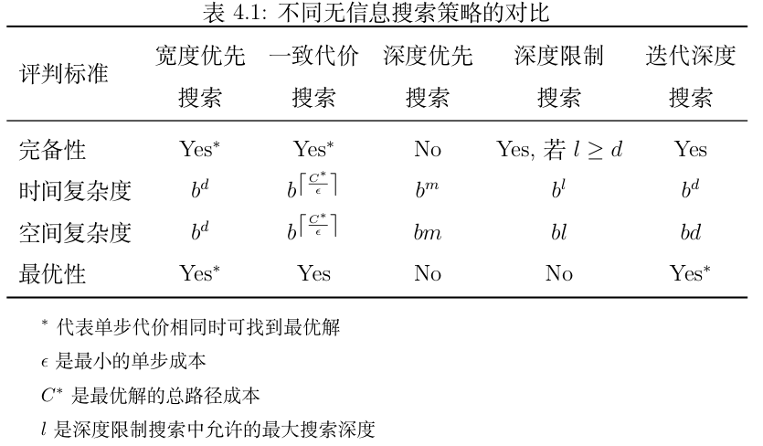
有信息搜索也被称为启发式搜索
以 g(n) 表示从初始状态到当前状态的路径成本总和，以 h(n) 表示对当前状态到目标状态的路径成本总和的估计。h(n) 被称为启发式函数 (Heuristic Function)
贪婪算法使用 h(n) 对节点排序，并挑选 h(n) 最小的节点扩展。
A* 搜索使用 f(n) = g(n) + h(n) 作为排序的函数
启发函数是可采纳的：乐观估计，不过高估计
一致的：全局估计不超过经过中间节点的局部估计
一致是比可采纳更严格的限制，如果一个启发式函数是一致的，那么它必定是可采纳的。
| 可采纳的启发式函数 | 一致的启发式函数 | |
|---|---|---|
| 树搜索 | 一定找到最优路径 | 一定找到最优路径 |
| 图搜索 | 不保证找到最优路径 | 一定找到最优路径 |
启发函数是可采纳的，那么A* 树搜索是最优的（证明：假设存在一个次优解 G′ 已经存在于前沿中）
如果启发函数是一致的，A* 图搜索是最优的。
最优化搜索
贪婪算法是比较当前状态和相邻状态的取值，如果当前状态的函数取值比它的一个某个邻居状态差时，我们就可以把当前状态移动到这个邻居状态，以处于一个更好的状态。
爬山算法
从一个随机状态开始，随后选取更好的相邻状态作为当前状态，并不断重复该过程只会比较直接相邻的状态。适合离散状态空间的最优化问题
梯度法
梯度方向是目标函数增大最快的方向，梯度的反方向是目标函数减小最快的方向。
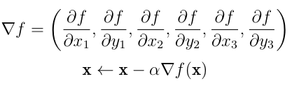
∇f 代表目标函数在 (x1, y1, x2, y2, x3, y3) 处的梯度，x 为参数向量(x1, y1, x2, y2, x3, y3)，而 α 代表步长 (Step Size)。步长太小，可能会导致搜索到最优值的过程比较慢；如果步长过大，则可能导致算法不收敛，来回震荡。
束搜索
• 从 k 个随机生成的状态开始，生成此 k 个状态的所有后续状态。
• 若其中有目标状态，则算法终止。
• 否则，从整个后续状态中选择 k 个最佳的后续，重复此过程。
在束搜索运行过程中，有用信息会在不同的搜索进程中传递。如果在
选出的 k 个最佳状态中，有两个或以上的状态来自于同一个前驱状态，那就意味肯定至少已经有一个来自初始点不好的搜索进程被放弃了，从而将算力资源集中到了最有可能找到最优值的区域。
以上三个贪婪算法均可能陷入局部最优解，而无法找到全局最优解。
对抗搜索
极小极大搜索算法 (Minimax)
假设对手总能做出理性最优的动作
$MINIMAX(s) =\begin{cases}
\text{UTILITY}(s) & \text{if TERMINAL-TEST}(s) \
\max{a \in \text{Actions}(s)} \text{MINIMAX}(\text{RESULT}(s, a)) & \text{if PLAYER}(s) = \text{MAX} \
\min{a \in \text{Actions}(s)} \text{MINIMAX}(\text{RESULT}(s, a)) & \text{if PLAYER}(s) = \text{MIN}
\end{cases}$
计算不同状态下 MINIMAX 值的过程其实是一种递归算法，我们知道处于终结状态时确定的效用值，然后根据上一个状态的采取动作的玩家是谁，选取公式来倒推出上一个状态的极小极大值，然后以此类推，用这种方式把对抗搜索问题中每个状态的 MINIMAX 值都计算出来。因此，采取动作的玩家可以根据后继状态的 MINIMAX 值来决定当前的最优策略。
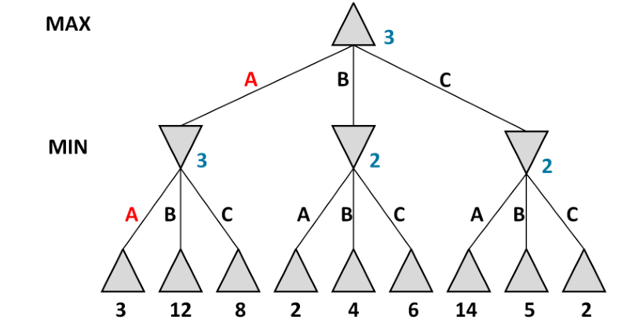
极小极大搜索算法案例示意图，其中 MAX 先行动，MIN 后行动，字
母代表 MAX 和 MIN 可能采取的动作，黑色数字代表终结状态下的 MINIMAX 值，蓝色数字代表了递归得到的 MINIMAX 值，红色字母代表在极小极大搜索算法的过程中的最优游戏策略。
多人情景下的改进：无论采取哪个动作所获取的最佳效用相同；对于其它维的数值，设置为在对应维度下的最小值。可以视为：每个参与者都假设了其他参与者都会在保证各自收益最大化的前提下针对自己，让自己永远处于一个收益最小的情况。
Alpha-Beta 剪枝算法
对于 MAX 节点（玩家节点），如果当前的估值 v > α，则将 α 值更新为 v；如果 v ≥ β，则剪除该分支。
对于 MIN 节点（对手节点），如果当前的估值 v < β，则将 β 值更新为 v；如果 v ≤ α，则剪除该分支。
例子：
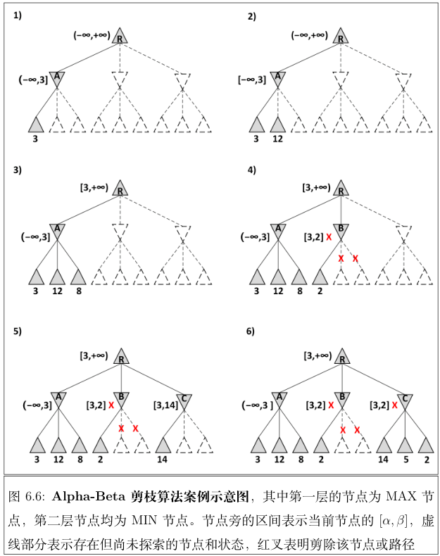
可以让搜索的深度更深
联结主义
四要素：模型的基本假设，目标函数，怎么训练(算法)，怎么预测
决策树
优化目标：H(Dk) 在所有叶节点上的均值，H(Dk) 表示以Dk 中样本的类别标签的分布计算的信息熵
训练方法：目标函数对模型的参数是不可导，采用贪心算法来进行决策树的构建。
预测：将样本所落入叶节点对应的类别标签作为新样本的预测值
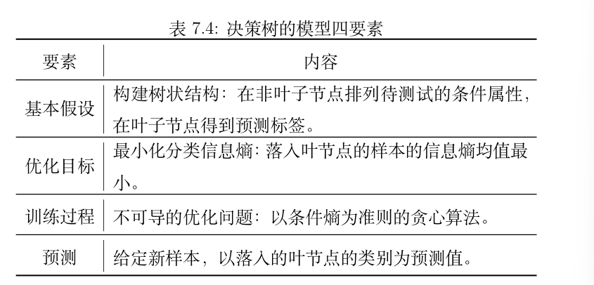
信息熵量化数据的混乱度
回归树
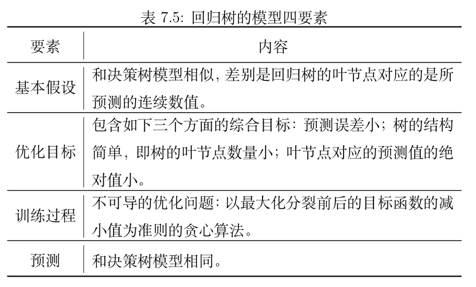
渐进梯度回归森林 (Gradient Boost Regression Trees,GBRT)也被称
为渐进梯度决策森林 (Gradient Boost Decision Trees,GBDT) 或多决策累加回归森林 (Multiple Additive Regression Trees,MART)
当发现前面几棵树的整体预测出现误差后，就再构造一棵树来对已生成的树的误差进行修正。
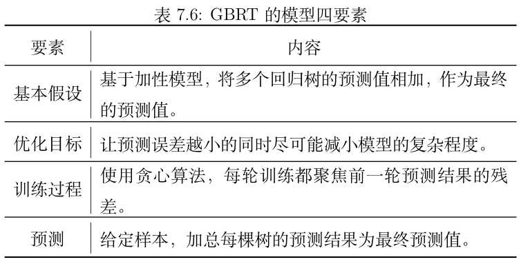
逻辑回归
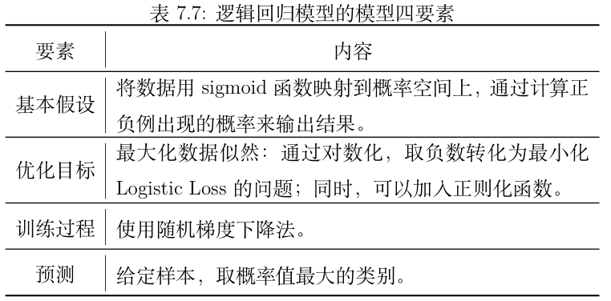
集成学习
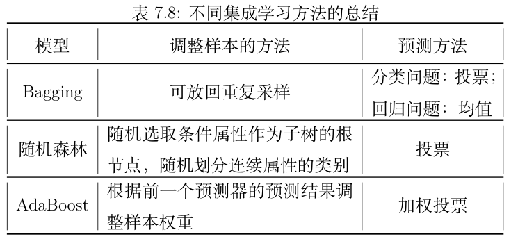
AdaBoost：增加每一次训练后分类不准的样本的权重，从而在下一次训练中，让分类器多去优化还无法被准确分类的训练样本。随着迭代次数增加，分类不准的样本会越来越少，也意味着整体模型的预测能力越来越强。串行、自适应地组合大量“弱”且简单的模型，构建出极其强大的预测模型。
BP网络基于梯度下降，通过前向计算得到输出误差，再利用链式求导将误差反向传播至各层，按$\Delta w_{ij} = -\eta \delta_j x_i$ 更新权重，直至收敛。其关键是误差的反向传递与权重的逐层修正。
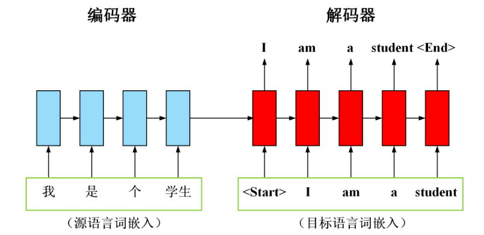
残差神经网络的基本原理和网络结构
概念：
1. 什么是序列标注
给输入序列（如句子）的每个元素（字/词）分配一个标签的 NLP 任务。特点是输入输出等长一一对应。
典型应用：命名实体识别（NER，如标注”北京”为地点）、词性标注（POS，如标注”跑”为动词）、中文分词。
2. 什么是机器翻译
利用计算机将一种自然语言自动转换为另一种语言的技术。
发展经历了规则驱动→统计机器翻译（SMT）→神经网络机器翻译（NMT，基于Seq2Seq/Transformer）。
评价指标常用 BLEU 分数，核心难点在于处理语言间的结构差异和歧义。
3. 什么是大语言模型（LLM）
基于Transformer 架构，在海量无标注文本上通过自监督学习预训练，具有数十亿至数千亿参数的神经网络模型。
具备上下文学习（In-context Learning）、指令遵循和涌现能力（如推理、摘要）。
4. 什么是 Token，和汉字的区别
Token 是 LLM 处理文本的最小数字单位（可为子词、词或字符），经分词器（Tokenizer）将文本映射为整数 ID。
区别：
- 汉字是人类语义最小单位（一字一词义）
- Token 是模型计算单位，粒度不一定对齐。例如 GPT-4 中”苹果”=2 token，”的”=1 token，生僻字可能是 3-4 个 token。
5. 为什么不同大模型 token 不同
取决于分词算法和训练语料：
- 算法差异：GPT 用 BPE（Byte Pair Encoding），BERT 用 WordPiece，T5 用 SentencePiece，切分规则不同。
- 词表差异：不同模型在构建词汇表时统计的高频子词组合不同，导致同一句话的 token 数不同（如 Claude 与文心一言对中文切分粒度不同）。
6. 缓解幻觉（Hallucination）的方法
幻觉指模型生成看似合理但违背事实的内容。缓解方法：
- RAG：外挂知识库，让模型基于检索到的真实文档生成。
- 知识注入：训练时加入知识图谱或事实性约束。
- 推理优化：Chain-of-Thought（思维链）引导逐步验证；Self-Consistency（多次采样投票）。
- 后处理：事实核查模块、要求模型提供引用来源（attribution）。
7. 什么是 RAG
检索增强生成（Retrieval-Augmented Generation），将信息检索系统与生成模型结合的框架。
流程：用户提问 → 向数据库/搜索引擎检索相关文档 → 将检索结果与问题拼接为 Prompt → LLM 基于这些证据生成答案。
优势：突破模型训练数据的时效限制（解决知识 cutoff），显著提高答案的事实准确性，且答案可溯源。
行为主义
演化计算
蚁群优化算法
基本原理：每个蚂蚁对应一个计算智能体；蚂蚁依概率选择候选位置进行移动；在经过的路径上留下“信息素”（Pheromone）；“信息素”随时间挥发； “信息素”浓度大的路径在后续的选择中会以更高的概率被选取
算法过程（以旅行商问题为例）
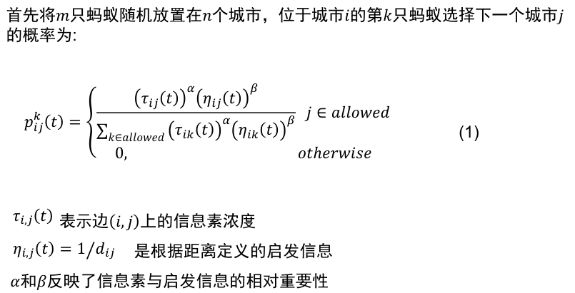
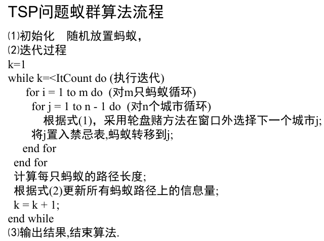
对于解空间为连续的优化问题不适用
粒子群优化算法
每个粒子代表待求解问题搜索解空间中的一个潜在解，它相当于一只
鸟，“飞行信息”包括粒子当前的位置和速度两个状态量。 每个粒子都可以获得其邻域内其它个体的信息，对所经过的位置进行评价，并根据这些信息和位置速度更新规则，改变自身的两个状态量。
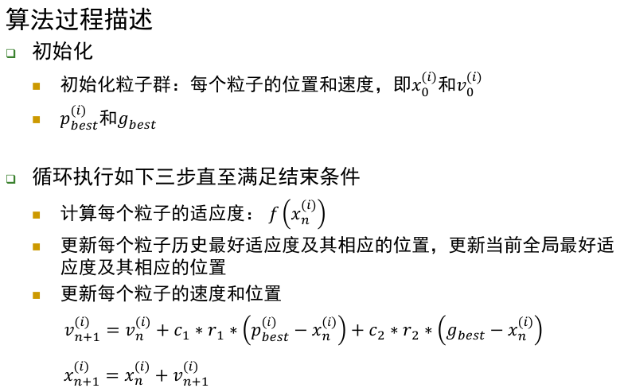
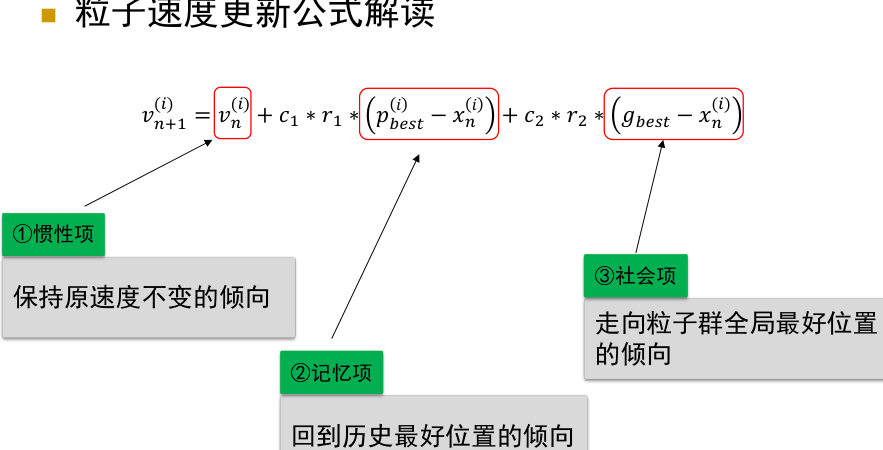
适用于求解连续解空间的优化问题
强化学习
乐观初值法：为每个行为赋一个高的初始估值
好处：初期每个行为都有较大机会被explore
UCB Upper-Confidence-Bound
$At \doteq \operatorname*{argmax}{a} \left[ Q_t(a) + c\sqrt{\frac{\ln t}{N_t(a)}} \right]$
$N_t(a)$表示时刻t之前行为a被选择的次数
选择潜力大的行为：依据估值的置信上界进行行为选择
第一项表示当前估值要高，e.g., 接近greedy action
第二项表示不确定性要高，e.g., 被选择的次数少
参数c用来控制exploration的程度
贝尔曼方程
$v{\pi}(s)= \sum{a} \pi(a|s) \sum{s’,r} p(s’, r|s, a) \left[ r + \gamma v{\pi}(s’) \right], \quad s \in \mathcal{S}$
当前状态的价值 = 所有可能动作下，（即时奖励 + 折扣后的未来价值）的期望
更新规则
$v{k+1}(s) = \sum{a} \pi(a|s) \sum{s’,r} p(s’, r|s, a) \left[ r + \gamma v{k}(s’) \right]$
博弈
局中人（Player）
在博弈中有权决定自己行动方案的博弈参加者
局中人不一定是具体的人，如球队、军队、企业
博弈中利益完全一致的参与者只能看成一个局中人
针对局中人2的策略t，若局中人1用策略s产生的收益大于或等于其任何其他策略，则称策略s是局中人1对局中人2的策略t的最佳应对。
如果一个局中人的某个策略对其它局中人的任何策略都是最佳应对，那么这个策略就是该局中人的占优策略。
如果一个局势下，每个局中人的策略都是相对其他局中人当前策略的最佳应对，则称该局势是一个纳什均衡。
纳什均衡就是博弈的一个均衡解；是一个僵局。
帕累托最优：对于一组策略选择（局势），若不存在其他策略选择使所有参与者得到至少和目前一样高的回报，且至少一个参与者会得到严格较高的回报，则这组策略选择为帕累托最优
社会最优：使参与者的回报之和最大的策略选择（局势）
社会最优的结果一定也是帕累托最优的结果，帕累托最优不一定是社会最优
首价密封报价拍卖： 所有竞拍者在同一时间以书面形式提交自己的报价，彼此不知道其他人的出价。 出价最高的竞拍者赢得拍卖。
纳什均衡：每个竞拍者的报价低于其对商品的估价
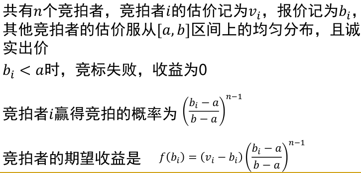
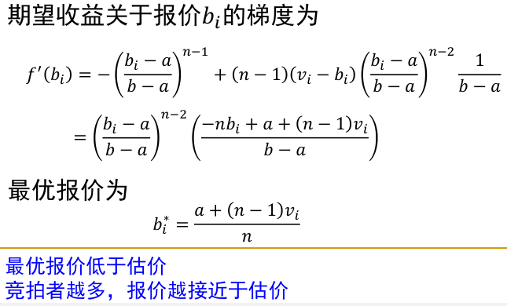
次价密封报价拍卖：所有竞拍者在同一时间以书面形式提交自己的报价，彼此不知道其他人的出价。 获胜者支付的价格是第二高的报价（而非自己的报价）。
纳什均衡：每个竞拍者会倾向于采用其对商品的估价进行报价
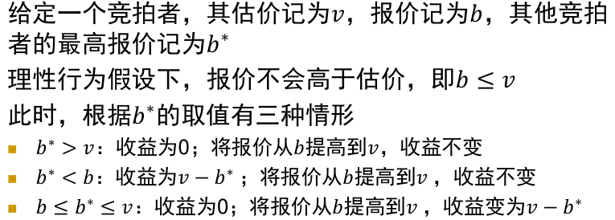
maxmin策略：最大化自己最坏情况时的效用（收益）
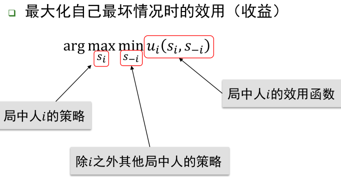
minmax策略：最小化对手的最大收益（收益）
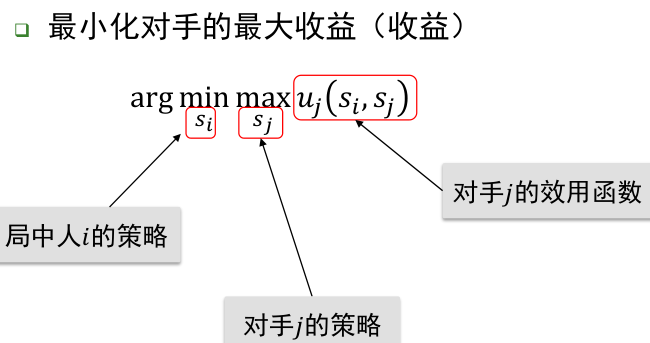
零和博弈情况下,minmax和maxmin是对偶的,minmax策略和maxmin策略等价于纳什均衡策略.
成功匹配的估价之和，称为匹配的效用
最优匹配：效用最大的匹配。最优匹配对于个体而言不一定最优。
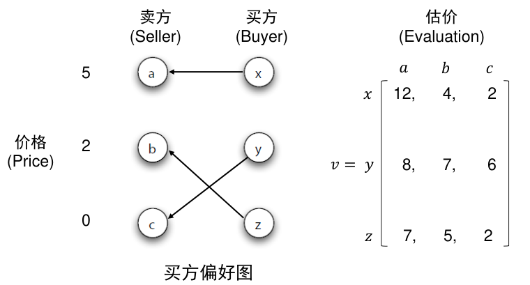
市场结清(Market-Clearing)：每个卖方和买方都成交了
给定买方报价的情况下，如果卖方的某种价格使得对应的买方偏好图中存在完全匹配，则称卖方的这组价格为市场结清价格
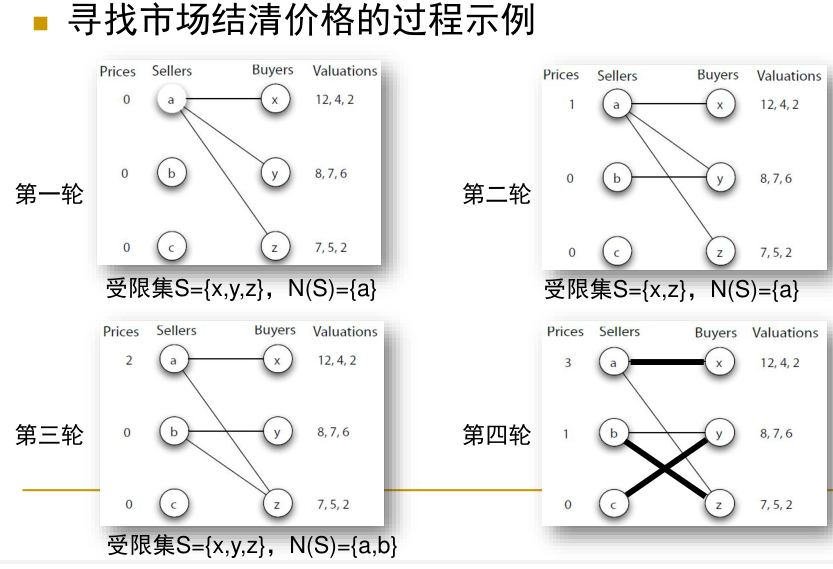
本科学过
市场结清价格总是存在；市场结清价格使得买卖双方总效用最优
对于结局中未参与配对的边，如果边的两个端点获得的收益之和小于1，则称这条边为不稳定边
不稳定边的存在意味着其两个端点可以通过改变报价而改变结局
如果一个结局中不存在不稳定边，则称该结局为稳定结局
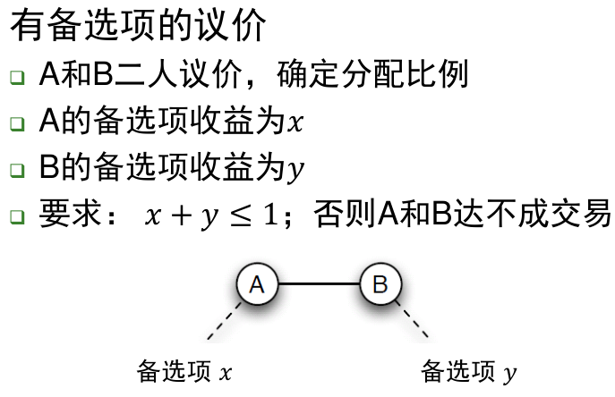
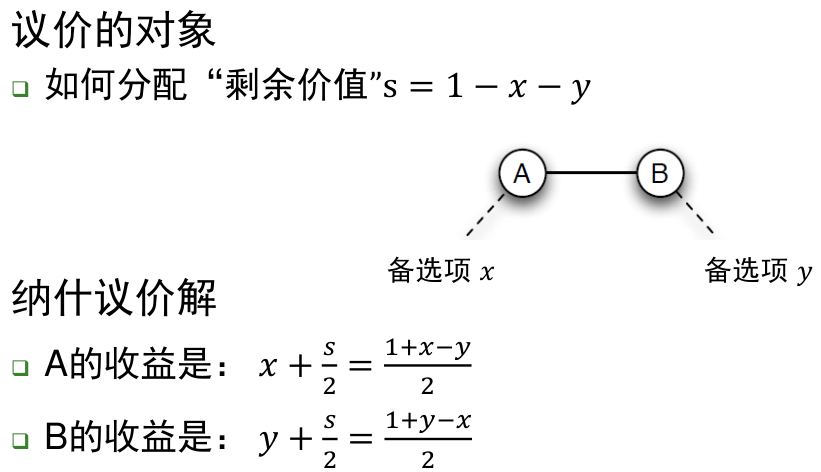
给定一个结局，如果结局中的任意一个参与配对的边都满足纳什议价解的条件，则称该结局是均衡结局
均衡结局一定是稳定结局
因果学习
𝒅 -分离用于确定因果模型图中任意一对节点是否独立
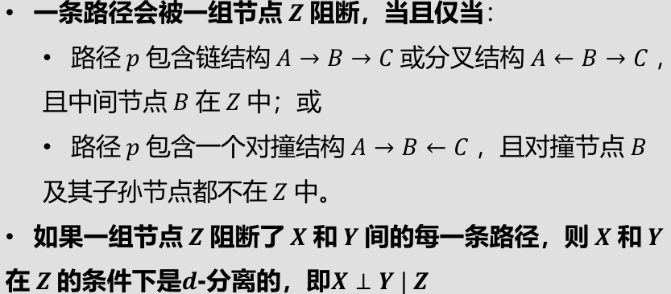
总结：d-分离需要阻断所有的路径。如何阻断：有链式结构和分叉结构的中间结点，或者对撞节点及其子孙节点都没有
后门准则
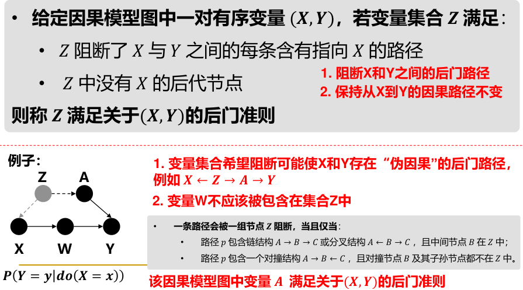